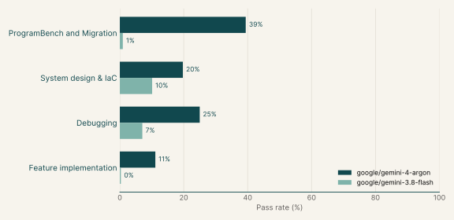
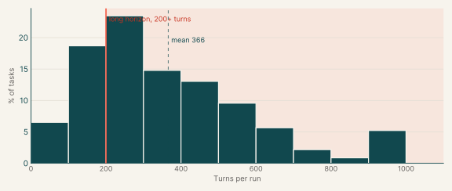

Coding OTS RL Envs
605
Tasks
23%
Gemini 4 Argon pass rate
2%
Gemini 3.8 Flash pass rate
We selected our coding RL Envs where Gemini models fail and grouped them into four catalogs.
| ProgramBench and Migration | 283 | Rebuild or upgrade programs to match a reference exactly, or port libraries to another language. | 46.8% | 420 |
| System design & IaC | 123 | Keep running services and live infrastructure correct through failures and refactors. | 20.3% | 265 |
| Diagnosis, Debugging, and Bug Fixing | 98 | Find and fix faults in real codebases from symptoms or documentation. | 16.2% | 417 |
| Feature implementation | 101 | Add capabilities to existing libraries and services without breaking current behaviour. | 16.7% | 348 |
| Total | 605 | 100% |
Gemini pass rates
Figure
Gemini pass rates by catalog

| google/gemini-4-argon | 23% |
| google/gemini-3.8-flash | 2% |
| google/gemini-3.7-flash | 0% |
Samples
| Main | ProgramBench and Migration | Example 1: Statistics & numerical methods (Go) | dynahist-go-port |
33% | 0% |
| Main | ProgramBench and Migration | Example 2: Media processing (Agent's choice) | svtav1-encoder-rebuild |
0% | |
| Main | ProgramBench and Migration | Example 3: Graph algorithms (Go) | dagre-go-port |
50% | |
| Main | System design & IaC | Example 1: Payments & banking (TypeScript) | actual-sync-compaction |
20% | |
| Main | System design & IaC | Example 2: Secrets & access control (Go) | harbor-scanner-credentials |
20% | |
| Main | System design & IaC | Example 3: Software supply chain (C#) | bagetter-fenced-writes |
20% | |
| Main | Diagnosis, Debugging, and Bug Fixing | Example 1: Compilers & language runtimes (Python) | exo-canonical-ots |
0% | |
| Main | Diagnosis, Debugging, and Bug Fixing | Example 2: Medical imaging & healthcare (Python) | torchio-canonical-ots |
0% | |
| Main | Diagnosis, Debugging, and Bug Fixing | Example 3: Machine learning & MLOps (Python) | swanlab-nanpair-ots |
0% | |
| Main | Feature implementation | Example 1: Databases & storage engines (Go) | memdb-txn-ots |
67% | |
| Main | Feature implementation | Example 2: Databases & storage engines (Python) | sqlite-history-repair |
0% | |
| Main | Feature implementation | Example 3: Data pipelines & ETL (Python) | etlplus-csv-pipeline |
0% | |
| Attached | ProgramBench and Migration | Probabilistic data structures (Go) | heavykeeper-go-port |
75% | |
| Attached | System design & IaC | Cloud infra: containers & self-hosted platforms (HCL (Terraform)) | dualipv6-module-refactor |
0% | |
| Attached | System design & IaC | Cloud infra: AWS platform stacks (HCL (Terraform)) | centralwatch-module-refactor |
0% | |
| Attached | System design & IaC | Cloud infra: AWS platform stacks (HCL (Terraform)) | modelrouter-module-refactor |
50% | |
| Attached | System design & IaC | Cloud infra: containers & self-hosted platforms (TypeScript) | atlasgrid-pulumi-migration |
50% | 67% |
| Attached | System design & IaC | Web applications (TypeScript) | dittofeed-user-deletion |
75% | |
| Attached | System design & IaC | Media processing (TypeScript) | immich-storage-quotas |
80% | |
| Attached | System design & IaC | Payments & banking (TypeScript) | medusa-cart-completion |
80% | |
| Attached | Diagnosis, Debugging, and Bug Fixing | Web crawling (Python) | scrapy-pdk-ots |
67% | 100% |
| Attached | Feature implementation | Data formats & serialization (Python) | xmltodict-nulls-etl |
50% |
Turn counts
A task's turn count is the average over its Gemini runs. Across all catalogs the average is 366 turns, and 75% of tasks average 200 turns or more.
Figure
Turns per task, all catalogs
